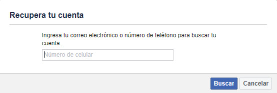
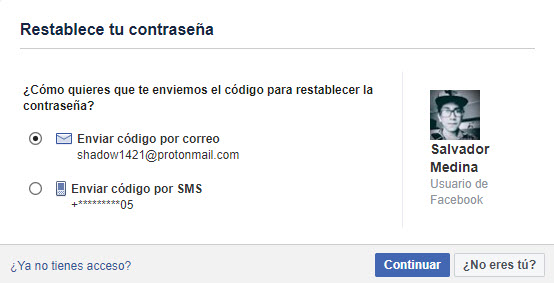
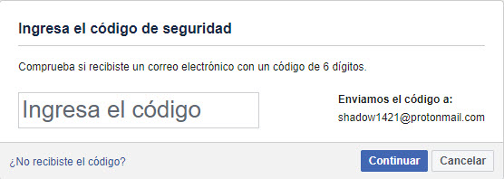
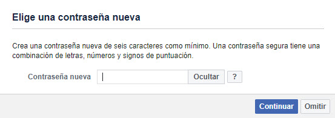

¿Cómo recuperar mi cuenta de Facebook? Te lo contamos paso a paso
Te explicamos qué es lo que tienes que hacer para recuperar tu cuenta de Facebook.
¿No puedes entrar a tu Facebook? Si olvidaste tu contraseña o perdistes acceso a tu correo electronico o número telefónico asociado con tu cuenta de Facebook, estas son las opciones que tienes para recuperar tu Facebook.
Restablece tu contraseña
paso 1:
entrar al enlace facebook.com/login/identify

paso 2:
ingresa tu correo electrónico y/o número de celular asociado a tu cuenta para poder restablecer la contraseña
Ten en cuenta que al utilizar esta opción deberás ingresar desde una computadora o celular con el que
hayas iniciado sesión anteriormente.

paso 3:
Lo siguiente es que recibirás una clave en tu correo electrónico o en tu celular para que puedas cambiar la contraseña y acceder a tu cuenta de Facebook. De salir conforme a lo planeado, te pedirá que escribas una nueva contraseña y, ¡listo!

¡Ojo! Para tu protección Facebook limitará el número de veces que puedes solicitar una nueva contraseña, por lo que tendrás que esperar 24 horas para intentarlo nuevamente.
paso 4: ingresa tu nueva clave de seguridad

gracias por leer mi publicacion , intente hacerlo facil de entender para todo los usuarios
bueno eso es todo, hasta la proxima